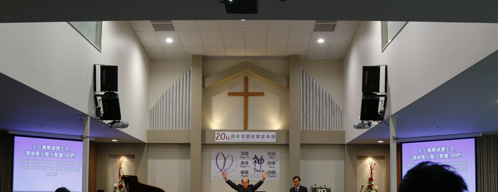

Combined Christmas Service
Join us on 25 December at 10:30 AM for a combined service in three languages, followed by a shared lunch. Friends and family are welcome.
Every Sunday・2 Basalt Place, East Tamaki, Auckland

Whether you have just moved to Auckland, are looking for a church, or want to explore the Christian faith, you are welcome. We worship in Cantonese, Mandarin and English every Sunday. Pick the service you are most comfortable with. There is no need to register.
Join us on 25 December at 10:30 AM for a combined service in three languages, followed by a shared lunch. Friends and family are welcome.
The next baptism class starts in February and runs for 8 sessions. Please speak to the pastor of your congregation to enrol.
Our church summer camp is planned for January. Details and registration will be announced in the bulletin.